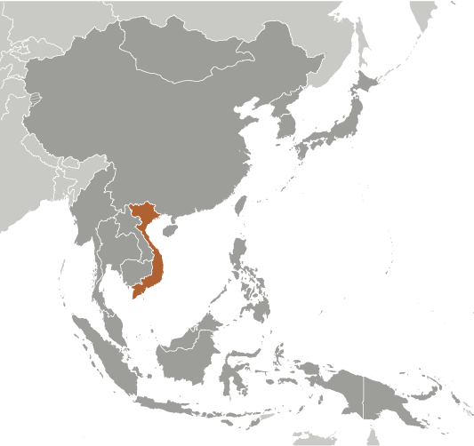
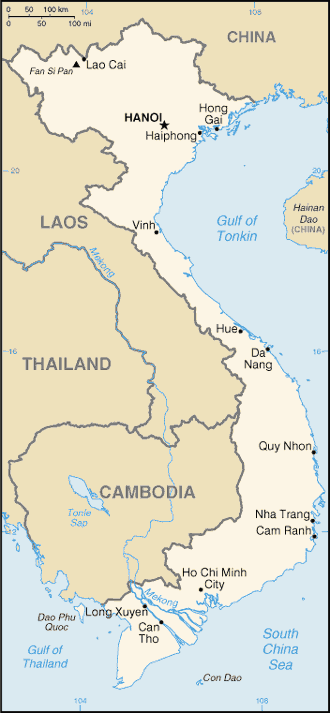

East & Southeast Asia :: VIETNAM
Introduction :: VIETNAM
-
The conquest of Vietnam by France began in 1858 and was completed by 1884. It became part of French Indochina in 1887. Vietnam declared independence after World War II, but France continued to rule until its 1954 defeat by communist forces under Ho Chi MINH. Under the Geneva Accords of 1954, Vietnam was divided into the communist North and anti-communist South. US economic and military aid to South Vietnam grew through the 1960s in an attempt to bolster the government, but US armed forces were withdrawn following a cease-fire agreement in 1973. Two years later, North Vietnamese forces overran the South reuniting the country under communist rule. Despite the return of peace, for over a decade the country experienced little economic growth because of conservative leadership policies, the persecution and mass exodus of individuals - many of them successful South Vietnamese merchants - and growing international isolation. However, since the enactment of Vietnam's "doi moi" (renovation) policy in 1986, Vietnamese authorities have committed to increased economic liberalization and enacted structural reforms needed to modernize the economy and to produce more competitive, export-driven industries. The communist leaders maintain tight control on political expression but have demonstrated some modest steps toward better protection of human rights. The country continues to experience small-scale protests, the vast majority connected to either land-use issues, calls for increased political space, or the lack of equitable mechanisms for resolving disputes. The small-scale protests in the urban areas are often organized by human rights activists, but many occur in rural areas and involve various ethnic minorities such as the Montagnards of the Central Highlands, Hmong in the Northwest Highlands, and the Khmer Krom in the southern delta region.
Geography :: VIETNAM
-
Southeastern Asia, bordering the Gulf of Thailand, Gulf of Tonkin, and South China Sea, as well as China, Laos, and Cambodia16 10 N, 107 50 ESoutheast Asiatotal: 331,210 sq kmland: 310,070 sq kmwater: 21,140 sq kmcountry comparison to the world: 67about three times the size of Tennessee; slightly larger than New Mexicototal: 4,616 kmborder countries (3): Cambodia 1,158 km, China 1,297 km, Laos 2,161 km3,444 km (excludes islands)territorial sea: 12 nmcontiguous zone: 24 nmexclusive economic zone: 200 nmcontinental shelf: 200 nm or to the edge of the continental margintropical in south; monsoonal in north with hot, rainy season (May to September) and warm, dry season (October to March)low, flat delta in south and north; central highlands; hilly, mountainous in far north and northwestmean elevation: 398 melevation extremes: lowest point: South China Sea 0 mhighest point: Fan Si Pan 3,144 mphosphates, coal, manganese, rare earth elements, bauxite, chromate, offshore oil and gas deposits, timber, hydropower, arable landagricultural land: 34.8%arable land 20.6%; permanent crops 12.1%; permanent pasture 2.1%forest: 45%other: 20.2% (2011 est.)46,000 sq km (2012)though it has one of the highest population densities in the world, the population is not evenly dispersed; clustering is heaviest along the South China Sea and Gulf of Tonkin, with the Mekong Delta (in the south) and the Red River Valley (in the north) having the largest concentrations of peopleoccasional typhoons (May to January) with extensive flooding, especially in the Mekong River deltalogging and slash-and-burn agricultural practices contribute to deforestation and soil degradation; water pollution and overfishing threaten marine life populations; groundwater contamination limits potable water supply; growing urban industrialization and population migration are rapidly degrading environment in Hanoi and Ho Chi Minh Cityparty to: Biodiversity, Climate Change, Climate Change-Kyoto Protocol, Desertification, Endangered Species, Environmental Modification, Hazardous Wastes, Law of the Sea, Ozone Layer Protection, Ship Pollution, Wetlandssigned, but not ratified: none of the selected agreementsextending 1,650 km north to south, the country is only 50 km across at its narrowest point
People and Society :: VIETNAM
-
96,160,163 (July 2017 est.)country comparison to the world: 15noun: Vietnamese (singular and plural)adjective: VietnameseKinh (Viet) 85.7%, Tay 1.9%, Thai 1.8%, Muong 1.5%, Khmer 1.5%, Mong 1.2%, Nung 1.1%, Hoa 1%, other 4.3%note: 54 ethnic groups are recognized by the Vietnamese Government (2009 est.)Vietnamese (official), English (increasingly favored as a second language), some French, Chinese, and Khmer, mountain area languages (Mon-Khmer and Malayo-Polynesian)Buddhist 7.9%, Catholic 6.6%, Hoa Hao 1.7%, Cao Dai 0.9%, Protestant 0.9%, Muslim 0.1%, none 81.8% (2009 est.)0-14 years: 23.55% (male 11,909,326/female 10,735,324)15-24 years: 16.23% (male 8,098,019/female 7,509,021)25-54 years: 45.56% (male 22,087,095/female 21,719,615)55-64 years: 8.55% (male 3,798,928/female 4,419,837)65 years and over: 6.12% (male 2,281,923/female 3,601,075) (2017 est.)total dependency ratio: 42.5youth dependency ratio: 32.9elderly dependency ratio: 9.6potential support ratio: 10.4 (2015 est.)total: 30.5 yearsmale: 29.4 yearsfemale: 31.7 years (2017 est.)country comparison to the world: 1140.93% (2017 est.)country comparison to the world: 12215.5 births/1,000 population (2017 est.)country comparison to the world: 1225.9 deaths/1,000 population (2017 est.)country comparison to the world: 170-0.3 migrant(s)/1,000 population (2017 est.)country comparison to the world: 118though it has one of the highest population densities in the world, the population is not evenly dispersed; clustering is heaviest along the South China Sea and Gulf of Tonkin, with the Mekong Delta (in the south) and the Red River Valley (in the north) having the largest concentrations of peopleurban population: 34.9% of total population (2017)rate of urbanization: 2.59% annual rate of change (2015-20 est.)Ho Chi Minh City 7.298 million; HANOI (capital) 3.629 million; Can Tho 1.175 million; Haiphong 1.075 million; Da Nang 952,000; Bien Hoa 834,000 (2015)at birth: 1.11 male(s)/female0-14 years: 1.11 male(s)/female15-24 years: 1.08 male(s)/female25-54 years: 1.01 male(s)/female55-64 years: 0.85 male(s)/female65 years and over: 0.63 male(s)/femaletotal population: 1 male(s)/female (2016 est.)54 deaths/100,000 live births (2015 est.)country comparison to the world: 91total: 17.3 deaths/1,000 live birthsmale: 17.6 deaths/1,000 live birthsfemale: 16.9 deaths/1,000 live births (2017 est.)country comparison to the world: 94total population: 73.7 yearsmale: 71.2 yearsfemale: 76.4 years (2017 est.)country comparison to the world: 1321.81 children born/woman (2017 est.)country comparison to the world: 14975.7% (2015)7.1% of GDP (2014)country comparison to the world: 791.18 physicians/1,000 population (2013)2 beds/1,000 population (2010)improved:urban: 99.1% of populationrural: 96.9% of populationtotal: 97.6% of populationunimproved:urban: 0.9% of populationrural: 3.1% of populationtotal: 2.4% of population (2015 est.)improved:urban: 94.4% of populationrural: 69.7% of populationtotal: 78% of populationunimproved:urban: 5.6% of populationrural: 30.3% of populationtotal: 22% of population (2015 est.)0.4% (2016 est.)country comparison to the world: 74250,000 (2016 est.)country comparison to the world: 228,000 (2016 est.)country comparison to the world: 23degree of risk: very highfood or waterborne diseases: bacterial diarrhea, hepatitis A, and typhoid fevervectorborne diseases: dengue fever, malaria, and Japanese encephalitis (2016)2.1% (2016)country comparison to the world: 19214.1% (2015)country comparison to the world: 605.7% of GDP (2013)country comparison to the world: 33definition: age 15 and over can read and writetotal population: 94.5%male: 96.3%female: 92.8% (2015 est.)total: 7%male: 6.8%female: 7.3% (2015 est.)country comparison to the world: 124
Government :: VIETNAM
-
conventional long form: Socialist Republic of Vietnamconventional short form: Vietnamlocal long form: Cong Hoa Xa Hoi Chu Nghia Viet Namlocal short form: Viet Namabbreviation: SRVetymology: "Viet nam" translates as "Viet south," where "Viet" is an ethnic self identification dating to a second century B.C. kingdom and "nam" refers to its location in relation to other Viet kingdomscommunist statename: Hanoi (Ha Noi)geographic coordinates: 21 02 N, 105 51 Etime difference: UTC+7 (12 hours ahead of Washington, DC, during Standard Time)58 provinces (tinh, singular and plural) and 5 municipalities (thanh pho, singular and plural)provinces: An Giang, Bac Giang, Bac Kan, Bac Lieu, Bac Ninh, Ba Ria-Vung Tau, Ben Tre, Binh Dinh, Binh Duong, Binh Phuoc, Binh Thuan, Ca Mau, Cao Bang, Dak Lak, Dak Nong, Dien Bien, Dong Nai, Dong Thap, Gia Lai, Ha Giang, Ha Nam, Ha Tinh, Hai Duong, Hau Giang, Hoa Binh, Hung Yen, Khanh Hoa, Kien Giang, Kon Tum, Lai Chau, Lam Dong, Lang Son, Lao Cai, Long An, Nam Dinh, Nghe An, Ninh Binh, Ninh Thuan, Phu Tho, Phu Yen, Quang Binh, Quang Nam, Quang Ngai, Quang Ninh, Quang Tri, Soc Trang, Son La, Tay Ninh, Thai Binh, Thai Nguyen, Thanh Hoa, Thua Thien-Hue, Tien Giang, Tra Vinh, Tuyen Quang, Vinh Long, Vinh Phuc, Yen Baimunicipalities: Can Tho, Da Nang, Ha Noi, Hai Phong, Ho Chi Minh City (Saigon)2 September 1945 (from France)Independence Day (National Day), 2 September (1945)several previous; latest adopted 15 April 1992, effective 1 January 1995; amended 2001, 2013 (2016)civil law system; note - the civil code of 2005 reflects a European-style civil lawhas not submitted an ICJ jurisdiction declaration; non-party state to the ICCtcitizenship by birth: nocitizenship by descent only: at least one parent must be a citizen of Vietnamdual citizenship recognized: noresidency requirement for naturalization: 5 years18 years of age; universalchief of state: President Tran Dai QUANG (since 2 April 2016); Vice President Dang Thi Ngoc THINH (since 7 April 2016)head of government: Prime Minister Nguyen Xuan PHUC (since 7 April 2016); Deputy Prime Ministers Truong Hoa BINH (since 9 April 2016), Vuong Dinh HUE (since 9 April 2016), Vu Duc DAM (since 13 November 2013), Trinh Dinh DUNG (since 9 April 2016), Pham Binh MINH (since 13 November 2013)cabinet: Cabinet proposed by prime minister, appointed by the president, and confirmed by the National Assemblyelections/appointments: president indirectly elected by National Assembly from among its members for a single 5-year term; election last held on 2 April 2016 (next to be held in spring 2021); prime minister appointed by the president from among members of the National Assembly, confirmed by National Assembly; deputy prime ministers appointed by the prime minister, confirmed by National Assemblyelection results: Tran Dai QUANG (CPV) elected president; percent of National Assembly vote - 98.9%; Nguyen Xuan PHUC elected prime minister; percent of National Assembly vote - 91.0%description: unicameral National Assembly or Quoc Hoi (500 seats; members directly elected by absolute majority vote with a second round if needed; members serve 5-year terms)elections: last held on 22 May 2016 (next to be held in May 2021)election results: percent of vote by party - CPV 95.8%, non-party members 4.2%; seats by party - CPV 473, non-party CPV-approved 19, self-nominated 2; note - 496 candidates elected, 2 CPV candidates-elect were disqualifiedhighest court(s): Supreme People's Court (consists of the chief justice and 13 judges)judge selection and term of office: chief justice elected by the National Assembly on the recommendation of the president for a 5-year, renewable term; other judges appointed by the president for 5-year termssubordinate courts: Court of Appeals; administrative, civil, criminal, economic, and labor courts; Central Military Court; People's Special Courts; note - the National Assembly can establish special tribunalsCommunist Party of Vietnam or CPV [Nguyen Phu TRONG]note: other parties proscribed8406 BlocDemocratic Party of Vietnam or DPVPeople's Democratic Party Vietnam or PDP-VNAlliance for Democracynote: these groups advocate democracy but are not recognized by the governmentADB, APEC, ARF, ASEAN, CICA, CP, EAS, FAO, G-77, IAEA, IBRD, ICAO, ICC (NGOs), ICRM, IDA, IFAD, IFC, IFRCS, ILO, IMF, IMO, IMSO, Interpol, IOC, IOM, IPU, ISO, ITSO, ITU, MIGA, NAM, OIF, OPCW, PCA, UN, UNCTAD, UNESCO, UNIDO, UNWTO, UPU, WCO, WFTU (NGOs), WHO, WIPO, WMO, WTOchief of mission: Ambassador Pham Quang VINH (since 23 February 2015)chancery: 1233 20th Street NW, Suite 400, Washington, DC 20036telephone: [1] (202) 861-0737FAX: [1] (202) 861-0917consulate(s) general: Houston, San Franciscoconsulate: New Yorkchief of mission: Ambassador Ted G. OSIUS III (since 16 December 2014)embassy: 7 Lang Ha Street, Hanoimailing address: 7 Lang Ha Street, Ba Dinh District, Hanoi; 4550 Hanoi Place, Washington, DC 20521-4550telephone: [84] (4) 3850-5000FAX: [84] (4) 3850-5010consulate(s) general: Ho Chi Minh Cityred field with a large yellow five-pointed star in the center; red symbolizes revolution and blood, the five-pointed star represents the five elements of the populace - peasants, workers, intellectuals, traders, and soldiers - that unite to build socialismyellow, five-pointed star on red field; lotus blossom; national colors: red, yellowname: "Tien quan ca" (The Song of the Marching Troops)lyrics/music: Nguyen Van CAOnote: adopted as the national anthem of the Democratic Republic of Vietnam in 1945; it became the national anthem of the unified Socialist Republic of Vietnam in 1976; although it consists of two verses, only the first is used as the official anthem
Economy :: VIETNAM
-
Vietnam is a densely populated developing country that has been transitioning from the rigidities of a centrally planned, highly agrarian economy since 1986 to a more industrial and market based economy, raising incomes substantially. In 2016, Vietnam missed its yearly growth target of 6.7% due to environmental issues – drought and salinization - impacting the agricultural sector and low oil prices affecting the extractive sector. However, annual GDP growth was 6.2%, reflecting strengthening domestic demand and strong manufacturing exports.Vietnam has a young population, stable political system, commitment to sustainable growth, relatively low inflation, stable currency, strong FDI inflows, and strong manufacturing sector. In addition, the country is committed to continuing its global economic integration. Vietnam joined the WTO in January 2007 and concluded several free trade agreements in 2015-16, including the EU-Vietnam Free Trade Agreement, the Korean Free Trade Agreement, and the Eurasian Economic Union Free Trade Agreement.However, to continue its trajectory of strong economic growth, the government acknowledges the need to spark a ‘second wave’ of reforms, including reforming state-owned-enterprises, reducing red tape, increasing business sector transparency, reducing the level of non-performing loans in the banking sector, and increasing financial sector transparency. Vietnam has demonstrated a commitment to sustainable growth over the last several years, but a recent slowdown in economic growth could test the government’s resolve.In 2016, Vietnam cancelled its civilian nuclear energy development program, citing public concerns about safety and the high cost of the program, and is facing growing pressure on energy infrastructure. Overall, the country’s infrastructure fails to meet the needs of an expanding middle class. As the 2017 Asia-Pacific Economic Cooperation (APEC) chair, Vietnam will lead the dialogue on key APEC priorities such as inclusive growth, innovation, food security and climate change.$595.4 billion (2016 est.)$553.5 billion (2015 est.)$513.3 billion (2014 est.)note: data are in 2016 dollarscountry comparison to the world: 37$201.3 billion (2016 est.)6.2% (2016 est.)6.7% (2015 est.)6% (2014 est.)country comparison to the world: 25$6,400 (2016 est.)$6,100 (2015 est.)$5,800 (2014 est.)note: data are in 2016 dollarscountry comparison to the world: 16130.7% of GDP (2016 est.)27.5% of GDP (2015 est.)31.7% of GDP (2014 est.)country comparison to the world: 24household consumption: 68.5%government consumption: 6.5%investment in fixed capital: 23.7%investment in inventories: -1.3%exports of goods and services: 93.6%imports of goods and services: -91.1% (2016 est.)agriculture: 16.3%industry: 32.7%services: 40.9% (2016 est.)rice, coffee, rubber, tea, pepper, soybeans, cashews, sugar cane, peanuts, bananas; pork; poultry; seafoodfood processing, garments, shoes, machine-building; mining, coal, steel; cement, chemical fertilizer, glass, tires, oil, mobile phones7.6% (2016 est.)country comparison to the world: 2155.93 million (2016 est.)country comparison to the world: 12agriculture: 48%industry: 21%services: 31% (2012)2.3% (2016 est.)3.4% (2015 est.)country comparison to the world: 3511.3% (2012 est.)lowest 10%: 3.2%highest 10%: 30.2% (2008)37.6 (2008)36.1 (1998)country comparison to the world: 76revenues: $49.48 billionexpenditures: $60.84 billion (2016 est.)24.6% of GDP (2016 est.)country comparison to the world: 121-5.6% of GDP (2016 est.)country comparison to the world: 16561.6% of GDP (2016 est.)60.1% of GDP (2015 est.)note: official data; data cover general government debt, and includes debt instruments issued (or owned) by government entities other than the treasury; the data include treasury debt held by foreign entities; the data include debt issued by subnational entities, as well as intra-governmental debt; intra-governmental debt consists of treasury borrowings from surpluses in the social funds, such as for retirement, medical care, and unemployment; debt instruments for the social funds are not sold at public auctionscountry comparison to the world: 71calendar year2.7% (2016 est.)0.6% (2015 est.)country comparison to the world: 1379% (31 December 2012)15% (31 December 2011)country comparison to the world: 296.96% (31 December 2016 est.)7.12% (31 December 2015 est.)country comparison to the world: 115$73.48 billion (31 December 2016 est.)$62.92 billion (31 December 2015 est.)country comparison to the world: 45$299.2 billion (31 December 2016 est.)$256.7 billion (31 December 2015 est.)country comparison to the world: 34$277.3 billion (31 December 2016 est.)$239.3 billion (31 December 2015 est.)country comparison to the world: 39$51.88 billion (31 December 2015 est.)$46.07 billion (31 December 2014 est.)$40.06 billion (31 December 2013 est.)country comparison to the world: 51$8.235 billion (2016 est.)$906 million (2015 est.)country comparison to the world: 23$176.6 billion (2016 est.)$162.1 billion (2015 est.)country comparison to the world: 28clothes, shoes, electronics, seafood, crude oil, rice, coffee, wooden products, machineryUS 20.2%, China 14.2%, Japan 8.2%, South Korea 6.2% (2016)$162.6 billion (2016 est.)$154.7 billion (2015 est.)country comparison to the world: 26machinery and equipment, petroleum products, steel products, raw materials for the clothing and shoe industries, electronics, plastics, automobilesChina 25.1%, South Korea 17.5%, Japan 7.9%, US 6%, Thailand 4.7% (2016)$36.91 billion (31 December 2016 est.)$28.62 billion (31 December 2015 est.)country comparison to the world: 45$84.34 billion (31 December 2016 est.)$77.8 billion (31 December 2015 est.)country comparison to the world: 53$115.4 billion (31 December 2016 est.)$102.8 billion (31 December 2015 est.)country comparison to the world: 42$7.7 billion (31 December 2009 est.)$5.3 billion (31 December 2008 est.)country comparison to the world: 66dong (VND) per US dollar -22,355 (2016 est.)22,355 (2015 est.)21,909 (2014 est.)21,189 (2013 est.)20,859 (2012 est.)
Energy :: VIETNAM
-
population without electricity: 2,600,000electrification - total population: 99%electrification - urban areas: 100%electrification - rural areas: 98% (2013)146.9 billion kWh (2015 est.)country comparison to the world: 29134.3 billion kWh (2015 est.)country comparison to the world: 26811 million kWh (2015 est.)country comparison to the world: 602.393 billion kWh (2015 est.)country comparison to the world: 5240.49 million kW (2015 est.)country comparison to the world: 2558% of total installed capacity (2015 est.)country comparison to the world: 1340% of total installed capacity (2015 est.)country comparison to the world: 20641% of total installed capacity (2015 est.)country comparison to the world: 491% of total installed capacity (2015 est.)country comparison to the world: 140301,800 bbl/day (2016 est.)country comparison to the world: 32183,600 bbl/day (2014 est.)country comparison to the world: 320 bbl/day (2014 est.)country comparison to the world: 2084.4 billion bbl (1 January 2017 es)country comparison to the world: 26156,900 bbl/day (2014 est.)country comparison to the world: 57422,000 bbl/day (2015 est.)country comparison to the world: 3728,860 bbl/day (2014 est.)country comparison to the world: 62256,600 bbl/day (2014 est.)country comparison to the world: 289.08 billion cu m (2015 est.)country comparison to the world: 4315.5 billion cu m (2015 est.)country comparison to the world: 480 cu m (2013 est.)country comparison to the world: 2070 cu m (2013 est.)country comparison to the world: 206699.4 billion cu m (1 January 2017 es)country comparison to the world: 29142 million Mt (2013 est.)country comparison to the world: 34
Communications :: VIETNAM
-
total subscriptions: 5,598,017subscriptions per 100 inhabitants: 6 (July 2016 est.)country comparison to the world: 28total: 122 millionsubscriptions per 100 inhabitants: 129 (July 2016 est.)country comparison to the world: 10general assessment: Vietnam is putting considerable effort into modernization and expansion of its telecommunication systemdomestic: all provincial exchanges are digitalized and connected to Hanoi, Da Nang, and Ho Chi Minh City by fiber-optic cable or microwave radio relay networks; main lines have been increased, and the use of mobile telephones is growing rapidlyinternational: country code - 84; a landing point for the SEA-ME-WE-3, the C2C, and Thailand-Vietnam-Hong Kong submarine cable systems; the Asia-America Gateway submarine cable system, completed in 2009, provided new access links to Asia and the US; satellite earth stations - 2 Intersputnik (Indian Ocean region) (2016)government controls all broadcast media exercising oversight through the Ministry of Information and Communication (MIC); government-controlled national TV provider, Vietnam Television (VTV), operates a network of 9 channels with several regional broadcasting centers; programming is relayed nationwide via a network of provincial and municipal TV stations; law limits access to satellite TV but many households are able to access foreign programming via home satellite equipment; government-controlled Voice of Vietnam, the national radio broadcaster, broadcasts on 6 channels and is repeated on AM, FM, and shortwave stations throughout Vietnam (2008).vntotal: 49.741 millionpercent of population: 52.7% (July 2016 est.)country comparison to the world: 16
Transportation :: VIETNAM
-
number of registered air carriers: 4inventory of registered aircraft operated by air carriers: 140annual passenger traffic on registered air carriers: 29,944,771annual freight traffic on registered air carriers: 384,470,240 mt-km (2015)VN (2016)45 (2013)country comparison to the world: 97total: 38over 3,047 m: 102,438 to 3,047 m: 61,524 to 2,437 m: 13914 to 1,523 m: 9 (2013)total: 71,524 to 2,437 m: 1914 to 1,523 m: 3under 914 m: 3 (2013)1 (2013)condensate 72 km; condensate/gas 398 km; gas 955 km; oil 128 km; oil/gas/water 33 km; refined products 206 km; water 13 km (2013)total: 2,600 kmstandard gauge: 178 km 1.435-m gauge; 253 km mixed gaugenarrow gauge: 2,169 km 1.000-m gauge (2014)country comparison to the world: 64total: 195,468 kmpaved: 148,338 kmunpaved: 47,130 km (2013)country comparison to the world: 2847,130 km (30,831 km weight under 50 tons) (2011)country comparison to the world: 4total: 579by type: barge carrier 1, bulk carrier 142, cargo 335, chemical tanker 23, container 19, liquefied gas 7, passenger/cargo 1, petroleum tanker 48, refrigerated cargo 1, roll on/roll off 1, specialized tanker 1registered in other countries: 86 (Cambodia 1, Kiribati 2, Mongolia 33, Panama 43, Taiwan 1, Tuvalu 6) (2010)country comparison to the world: 21major seaport(s): Cam Pha Port, Da Nang, Haiphong, Phu My, Quy Nhonriver port(s): Ho Chi Minh (Mekong)container port(s) (TEUs): Saigon (6,556,000), Saigon New Port (5,026,000) (2015)
Military and Security :: VIETNAM
-
2.44% of GDP (2016)2.36% of GDP (2015)2.29% of GDP (2014)2.18% of GDP (2013)2.16% of GDP (2012)country comparison to the world: 33People's Armed Forces: People's Army of Vietnam (PAVN, includes Vietnam People's Navy (with Naval Infantry), Vietnam People's Air and Air Defense Force, Border Defense Command, Coast Guard) (2013)18-25 years of age for male compulsory and voluntary military service; females may volunteer for active duty military service; conscription typically takes place twice annually and service obligation is 18 months (Army, Air Defense), 2 years (Navy and Air Force); 18-45 years of age (male) or 18-40 years of age (female) for Militia Force or Self Defense Force service; males may enroll in military schools at age 17 (2013)the International Maritime Bureau reports the territorial and offshore waters in the South China Sea as high risk for piracy and armed robbery against ships; numerous commercial vessels have been attacked and hijacked both at anchor and while underway; hijacked vessels are often disguised and cargo diverted to ports in East Asia; crews have been murdered or cast adrift; the number of reported incidents declined from 15 in 2015 to seven in 2016, primarily near the port of Vung Tau
Transnational Issues :: VIETNAM
-
southeast Asian states have enhanced border surveillance to check the spread of avian flu; Cambodia and Laos protest Vietnamese squatters and armed encroachments along border; Cambodia accuses Vietnam of a wide variety of illicit cross-border activities; progress on a joint development area with Cambodia is hampered by an unresolved dispute over sovereignty of offshore islands; an estimated 300,000 Vietnamese refugees reside in China; establishment of a maritime boundary with Cambodia is hampered by unresolved dispute over the sovereignty of offshore islands; the decade-long demarcation of the China-Vietnam land boundary was completed in 2009; China occupies the Paracel Islands also claimed by Vietnam and Taiwan; Brunei claims a maritime boundary extending beyond as far as a median with Vietnam, thus asserting an implicit claim to Lousia Reef; the 2002 "Declaration on the Conduct of Parties in the South China Sea" has eased tensions but falls short of a legally binding "code of conduct" desired by several of the disputants; Vietnam continues to expand construction of facilities in the Spratly Islands; in March 2005, the national oil companies of China, the Philippines, and Vietnam signed a joint accord to conduct marine seismic activities in the Spratly Islands; Economic Exclusion Zone negotiations with Indonesia are ongoing, and the two countries in Fall 2011 agreed to work together to reduce illegal fishing along their maritime boundarystateless persons: 11,000 (2016); note - Vietnam's stateless ethnic Chinese Cambodian population dates to the 1970s when thousands of Cambodians fled to Vietnam to escape the Khmer Rouge and were no longer recognized as Cambodian citizens; Vietnamese women who gave up their citizenship to marry foreign men have found themselves stateless after divorcing and returning home to Vietnam; the government addressed this problem in 2009, and Vietnamese women are beginning to reclaim their citizenshipminor producer of opium poppy; probable minor transit point for Southeast Asian heroin; government continues to face domestic opium/heroin/methamphetamine addiction problems despite longstanding crackdowns; enforces the death penalty for drug trafficking